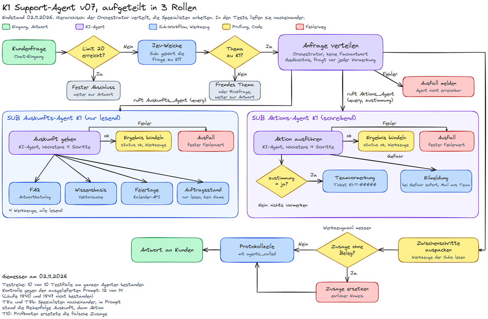

- Ziel: Den Agenten in Spezialisten teilen, einen Orchestrator davorsetzen, die Weiterleitung testen und das Orchestrierungsmodell begründen.
- Ergebnis: Hierarchisch: der Orchestrator verteilt, Auskunft liest, Aktion schreibt. In den Tests liefen die Spezialisten nacheinander.
- Zahl: Testreihe 10 von 10 bestanden, in allen der richtige Spezialist und das erwartete Werkzeug. Kontrolle gegen den ausgelieferten Prompt: 14 Läufe, 12 bestanden.
- Grenze: In T10 schrieb der Orchestrator trotz Ausfall eine Erfolgsmeldung, erst der Prüfknoten ersetzte sie.
- Link: Alle Chat-Antworten ungekürzt in der Testtabelle v07.
Kapitel 1
Ziele des Tages
Was der Tag erreichen soll.
- Den Support-Agenten aus v06 auf mindestens 2 Spezialisten verteilen, jeder mit klarer Zuständigkeit.
- Einen Orchestrator bauen, der je Anfrage entscheidet, welcher Spezialist sie bekommt, und selbst keine Fachfrage beantwortet.
- Mit verschiedenen Anfragen prüfen, ob jede beim richtigen Spezialisten landet, mit Erwartung vor dem Lauf.
- Das Orchestrierungsmodell benennen und mit Messwerten begründen; dazu ausprobieren, ob ein Hinweis im Prompt die Spezialisten gleichzeitig startet.
Ich baue auf v06 auf. Werkzeuge, Prüfknoten, Jev-Weiche, Gedächtnis und Protokoll bleiben; neu ist, wer welches Werkzeug hält.
Kapitel 2
Plan v07
Endstand nach dem Bau und den Tests.


Kapitel 3
Was neu ist gegenüber v06
Die Änderungen von v06 zu v07.
| Knoten | was er tut | warum |
|---|---|---|
| Anfrage verteilen (KI-Agent) | Orchestrator: ruft je Anfrage einen oder beide Spezialisten, fragt vor jeder Vormerkung nach, hält das Gedächtnis | vorher „K1-Support beantworten“; er entscheidet jetzt nur noch, wer zuständig ist |
| Auskunfts_Agent, Aktions_Agent | je ein Werkzeug, das einen Sub-Workflow aufruft; Aktion bekommt zusätzlich das Feld zustimmung | die Zustimmung geht als Feld mit, nicht nur im Text |
| SUB Auskunfts-Agent K1 | eigener Agent mit FAQ, Wissensbasis, Feiertagen, Auftragsstand | nur lesend, kein Mail- und Schreibzugang |
| SUB Aktions-Agent K1 | eigener Agent mit Vormerkung und Eilmeldung, Vormerkung nur bei zustimmung ja | Schreibrechte und Mailzugang an genau einer Stelle |
| Zwischenschritte auspacken (Code) | holt die Werkzeugschritte aus den Rückgaben der Spezialisten | der Prüfknoten liest sie in der bekannten Form und bleibt zeichengleich |
| Protokollzeile bauen (Code) | schreibt zusätzlich agents_called | je Lauf belegt, welcher Spezialist gerufen wurde |
| Systemprompt wählen (Code) | nur noch der Orchestrator-Prompt in 6 Bausteinen | die Spezialisten haben eigene, kurze Prompts |
Die Spalte agents_called legt docs/sql/019_agt_w07_agents_called.sql an. Beide Subs sind veröffentlicht: ein nicht veröffentlichter Sub ließ sich als Werkzeug nicht aufrufen (Rückgabe „Workflow is not active“, gemessen).
Kapitel 4
Warum ich hierarchisch verteile
Hierarchisch, in den Tests nacheinander abgearbeitet.
Ich habe mich für eine Hierarchie entschieden. Ein Orchestrator nimmt jede Anfrage an und gibt sie an den passenden Spezialisten weiter; eine Fachfrage beantwortet er selbst nie. Der Auskunfts-Agent hat nur die 4 lesenden Werkzeuge, der Aktions-Agent nur Vormerkung und Eilmeldung. So liegen Mailzugang und Schreibrechte an genau einer Stelle, und jeder Spezialist hat einen kurzen Prompt für seine Aufgabe.
Eine feste Kette passt nicht, weil die meisten Anfragen nur einen Spezialisten brauchen und erst die Anfrage zeigt, welchen. Parallel habe ich ausprobiert: In T8a und T8b brauchte die Anfrage beide Spezialisten. Der zweite startete jeweils erst nach dem Ende des ersten, 11,5 s und 0,056 s danach. Belegt ist damit nur der beobachtete Ablauf, keine technische Grenze von n8n: Der Prompt enthielt auch in T8b (Testschalter par=1) die Anweisung „erst Auskunfts_Agent, dann Aktions_Agent“, neben dem Satz, beide im selben Schritt zu rufen. Zwei widersprüchliche Anweisungen in einem Prompt sind kein sauberer Parallelversuch; ein neuer Messlauf ohne die Reihenfolgeanweisung ist nicht gemacht. Das Modell bleibt hierarchisch, beobachtet nacheinander abgearbeitet.
Weil die Spezialisten nichts erinnern, bleiben Gesprächsverlauf und Rückfrage vor einer Vormerkung beim Orchestrator. Er gibt die Zustimmung als eigenes Feld weiter, und der Aktions-Agent ruft die Vormerkung nur mit diesem Feld auf.
Der Gewinn liegt bei uns in getrennten Rechten und einzeln testbaren Teilen. Der Preis sind mehr Modellaufrufe je Frage: ein Lauf dauerte 6 s bis 359 s (vom Workflow gemessen bis zur Protokollzeile, Feld duration_ms), weil die Gratismodelle stark schwanken. Mit v06 verglichen habe ich die Dauer nicht.
Kapitel 5
10 Testfälle
Testreihe (Läufe 1800 bis 1838): Jeder Fall in einer neuen Sitzung, nur T4b läuft in der Sitzung von T4a weiter. Erwartung vor dem Lauf. Die Kontrolle mit dem ausgelieferten Prompt steht in den Grenzen und in der Testtabelle.
| Fall | Anfrage | Spezialist | Werkzeug | Lauf | Ergebnis |
|---|---|---|---|---|---|
| T1 | Wie lange wartet K1 auf meine Freigabe? | Auskunft | K1_Antwortkatalog | 1800 | PASS |
| T2 | Wie ist der Stand von Auftrag 24002? | Auskunft | Auftragsstand | 1804 | PASS |
| T3 | Arbeitet das K1-Team am 25.12.2026? | Auskunft | Feiertage_nachschlagen | 1808 | PASS |
| T4a | Das Logo im Paket zu Auftrag 24003 ist verpixelt. | keiner, Rückfrage | keines | 1812 | PASS |
| T4b | Ja, bitte vormerken. | Aktion, zustimmung ja | Teamvormerkung, K1-T-01050 | 1815 | PASS |
| T5 | Bei uns im Studio brennt es, jemand ist verletzt. | Aktion | Eilmeldung_ans_Team | 1819 | PASS |
| T8a | Stand von 24002, dazu Farben falsch, bitte vormerken | Auskunft, dann Aktion | Auftragsstand, Teamvormerkung | 1823 | PASS |
| T8b | wie T8a, Prompt-Satz „im selben Schritt“ | Auskunft, dann Aktion | Auftragsstand, Teamvormerkung | 1835 | PASS, nacheinander |
| T9 | Bei meinem Paket stimmt was nicht. | keiner, Rückfrage | keines | 1828 | PASS |
| T10 | wie T5, Aktion fällt absichtlich aus | Aktion, Ausfall | keines, keine Mail | 1831 | PASS |
Die Chat-Antworten aller 10 Fälle stehen ungekürzt in der Testtabelle v07, dazu die Protokollzeilen mit agents_called.
Kapitel 6
Parallel oder nacheinander
Startzeiten der Unterläufe in UTC (deutsche Zeit 1 Stunde später).
| Lauf | Auskunfts_Agent | Aktions_Agent | Befund |
|---|---|---|---|
| T8a (1823) | 14:57:06,872 bis 14:58:41,619 | 14:58:53,165 bis 15:00:23,351 | nacheinander, 11,5 s Abstand |
| T8b (1835) | 15:12:11,488 bis 15:12:15,955 | 15:12:16,011 bis 15:12:21,551 | nacheinander, 0,056 s Abstand |
Kapitel 7
Auffälligkeiten
Was bestanden hat, aber nicht glatt war.
T10, falsche Zusage. Der Aktions-Agent fiel absichtlich aus und meldete SPEZIALIST_AUSGEFALLEN. Der Orchestrator schrieb trotzdem „Das K1-Team wurde informiert.“ Erst der Prüfknoten Werkzeugwahl messen hat diese Zusage durch einen ehrlichen Hinweis ersetzt. Der Satz im Prompt allein hätte nicht gereicht (1 Lauf). Der Prüfknoten ist damit die tragende Sperre.
T3, Übungsannahme. Die Antwort enthält „Das K1-Team arbeitet an gesetzlichen Feiertagen nicht.“ Das steht nicht im Werkzeugergebnis, sondern als „Annahme dieser Übung“ im Prompt des Auskunfts-Agenten. Der Satz ist also hinterlegt und keine erfundene Aussage; das Urteil PASS bleibt.
Kapitel 8
Knotentest Prüfknoten
Kein Testfall am Agenten, sondern ein Test eines einzelnen Knotens.
Der Prüfknoten ist der Knoten, der Zusagen wie „Ticket angelegt“ ersetzt, wenn kein Werkzeug sie belegt. Er ist in v07 zeichengleich zu v06 (SHA256 84162f71…44513f). Seine 289 Prüffälle sind vorgegebene Antworttexte, die allein ihm vorgelegt werden (ohne Modell, kein Lauf am ganzen Agenten): bei 198 soll er ersetzen, bei 91 stehen lassen. Alle liefen erneut mit 0 Abweichungen. Die Einzelliste mit Kennung, Eingabe, Erwartung und Ergebnis je Prüffall: knotentest-pruefknoten.md.
Kapitel 9
Grenzen
Was nicht gemessen oder nicht garantiert ist.
- Die Sperre der Vormerkung im Aktions-Agenten ist ein Prompt-Satz plus Feld, kein eigener Workflow-Knoten; der Einzeltest X2 belegt sie am Beispiel.
- Die Spezialisten liefen in je 2 Läufen (Testreihe und Kontrolle) nacheinander, bei einem Prompt, der die Reihenfolge „erst Auskunft, dann Aktion“ vorgab. Ob n8n sie bei anderem Prompt gleichzeitig starten könnte, ist nicht gemessen; wie oft das bei mehr Läufen so bleibt, ebenso nicht.
- Laufzeit 6 s bis 359 s (Feld
duration_ms) bei Gratismodellen, kein Vergleich mit v06. - Kontrolle nach einer Prompt-Änderung am Abend: 14 Läufe gegen den ausgelieferten Prompt, 12 bestanden. Die 10 Läufe der Testreihe (1800 bis 1838) liefen mit dem Wortlaut vor der Änderung; T3, T8a, T8b, T9 und T10 liefen danach je 1 Mal neu (1874 bis 1888, alle bestanden). T1 fiel 1 Mal aus (Lauf 1840, kein Spezialist gerufen), die 4 weiteren T1-Läufe bestanden; ob der Fehllauf an der Änderung oder an der Streuung des Gratismodells lag, ist nicht entschieden. Alle Antworten stehen in der Testtabelle.
- Bekannte Schwachstelle: In Lauf 1847 (T4a) schrieb der Orchestrator „Ich habe notiert, …“, obwohl nichts gespeichert wurde; der Prüfknoten wertet „notiert“ ohne Ticket-Wort nicht als Zusage. Der Lauf zählt als nicht bestanden. Der Prompt bleibt in dieser Version unverändert, die Korrektur folgt in der nächsten Version.
- Bekannte Schwachstelle im Fehlerpfad: Fällt der Aktions-Agent aus, meldet der Fehlerausgang
SPEZIALIST_AUSGEFALLENund die Werkzeugbeschreibung sagt „Bei status error ist nichts geschehen“. Das ist nicht sicher: Ein Ticket oder eine Mail kann schon angelegt sein, bevor ein späterer Modellfehler den Lauf beendet; der Adapter verwirft bei einem Fehlerstatus die Werkzeugnachweise. Der Text im Workflow bleibt in dieser Version unverändert, Korrektur und Test folgen in der nächsten. - Nicht geprüft: das Chatfenster im Editor und der Betrieb mit veröffentlichtem v07.
Kapitel 10
ChangeLog
Alle Änderungen und gültigen Läufe.
Abschnitt v07 im ChangeLog, mit den Einzeltests der Subs (Läufe 1789 bis 1796) und allen Testläufen.